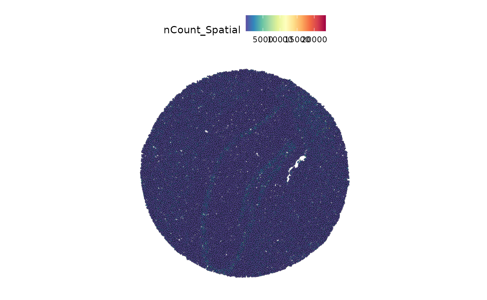
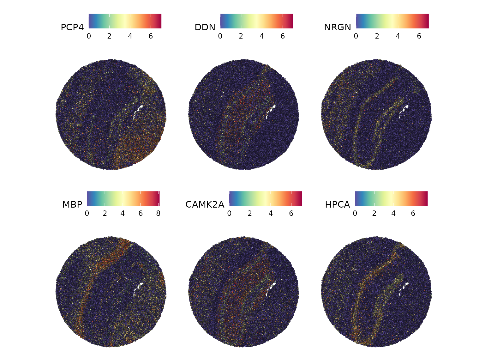

a04_example_spatial_slideseqV2.RmdWe can apply singleCellHaystack to spatial
transcriptomics data as well. Here we use Seurat and the spatial
transcriptomics data available in the SeuratData package.
For this example we use Slide-seqV2 hippocampus data. For more details
about analyzing spatial transcriptomics with Seurat take a look at their
spatial transcriptomics vignette here.
library(Seurat)
library(SeuratData)
library(singleCellHaystack)We focus on the ssHippo slice.
if (!"ssHippo" %in% SeuratData::InstalledData()[["Dataset"]]) {
SeuratData::InstallData("ssHippo")
}
ssHippo <- LoadData("ssHippo")
ssHippo
#> An object of class Seurat
#> 23264 features across 53173 samples within 1 assay
#> Active assay: Spatial (23264 features, 0 variable features)
#> 1 image present: imageWe filter genes with less 10 cells with non-zero counts. This reduces the computational time by eliminating very lowly expressed genes.
counts <- GetAssayData(ssHippo, slot = "counts")
sel.ok <- Matrix::rowSums(counts > 1) > 10
ssHippo <- ssHippo[sel.ok, ]
ssHippo
#> An object of class Seurat
#> 11390 features across 53173 samples within 1 assay
#> Active assay: Spatial (11390 features, 0 variable features)
#> 1 image present: imageWe can plot the total number of counts per bead, superimposed on the image of the brain.
SpatialFeaturePlot(ssHippo, features = "nCount_Spatial")
We normalize the data we use log normalization.
ssHippo <- NormalizeData(ssHippo)haystack on the spatial coordinates
The two inputs to singleCellHaystack are 1) the gene
expression data and 2) the spatial coordinates of the Slide-seq V2
pucks. Please note that we are not using an embedding as input space
here, but the actual 2D coordinates of spots inside the tissue. Since
this dataset contains about 53k spots and 11k genes, a run of
singleCellHaystack can take a few minutes.
dat.expression <- GetAssayData(ssHippo, slot = "data")
dat.coord <- GetTissueCoordinates(ssHippo)
set.seed(123)
res <- haystack(dat.coord[,1:2], dat.expression)
#> ### calling haystack_continuous_highD()...
#> ### Using package sparseMatrixStats to speed up statistics in sparse matrices.
#> ### Calculating row-wise mean and SD...
#> ### Filtered 0 genes with zero variance...
#> ### Using 100 randomizations...
#> ### Using 100 genes to randomize...
#> ### converting expression data from dgCMatrix to dgRMatrix
#> ### scaling input data...
#> ### deciding grid points...
#> ### calculating Kullback-Leibler divergences...
#> ### performing randomizations...
#> ### estimating p-values...
#> ### picking model for mean D_KL...
#> ### using natural splines
#> ### best RMSD : 0.014
#> ### best df : 5
#> ### picking model for stdev D_KL...
#> ### using natural splines
#> ### best RMSD : 0.011
#> ### best df : 4
#> ### returning result...We can check the top genes with spatial biased distribution.
show_result_haystack(res.haystack = res, n = 10)
#> D_KL log.p.vals log.p.adj
#> PCP4 0.14476979 -262.8622 -258.8057
#> DDN 0.31739249 -254.4627 -250.4061
#> NRGN 0.24028799 -249.2989 -245.2424
#> MBP 0.09794532 -239.7026 -235.6461
#> CAMK2A 0.12320361 -234.3899 -230.3333
#> HPCA 0.15498142 -227.5796 -223.5231
#> TTR 0.23199941 -225.9053 -221.8488
#> ZIC1 0.69082139 -222.6275 -218.5709
#> PLP1 0.09916045 -220.5324 -216.4759
#> PRKCD 0.84449956 -219.1199 -215.0634And we can visualize the expression of the 6 top-scoring genes in the spatial plot.
top6 <- show_result_haystack(res.haystack = res, n = 6)
SpatialFeaturePlot(ssHippo, features = rownames(top6))